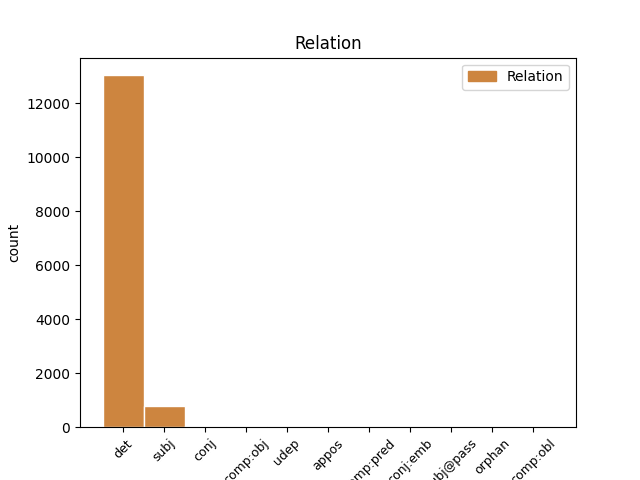
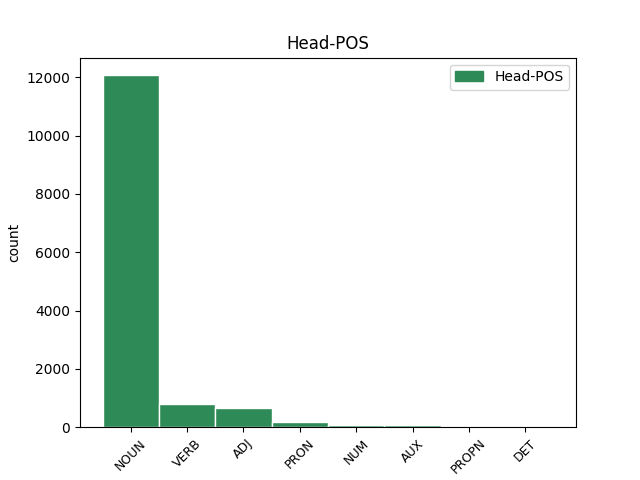
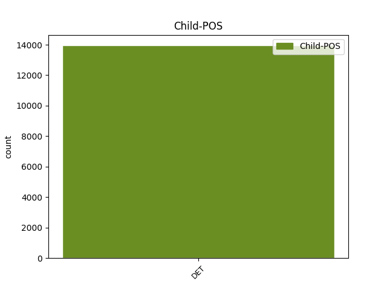

Distribution of features within this leaf



Agreement Rules sorted by frequency.
- When the dependent token is the determiner(det) of the head token, and the dependent token is DET.
1 Strok _ _ _ _ 0 _ _ _
2 Lærarafelagið _ _ _ _ 0 _ _ _
3 Skúlablaðið _ _ _ _ 0 _ _ _
4 Bókadeildin _ _ _ _ 0 _ _ _
5 Bókaklubbin _ _ _ _ 0 _ _ _
6 Bókamiðsølan _ _ _ _ 0 _ _ _
7 Í _ _ _ _ 0 _ _ _
8 eini _ _ _ _ 0 _ _ _
9 uppgerð _ _ _ _ 0 _ _ _
10 yvir _ _ _ _ 0 _ _ _
11 læntar _ _ _ _ 0 _ _ _
12 bøkur _ _ _ _ 0 _ _ _
13 á _ _ _ _ 0 _ _ _
14 skúlabókasavninum _ _ _ _ 0 _ _ _
15 í _ _ _ _ 0 _ _ _
16 Eysturskúlanum _ _ _ _ 0 _ _ _
17 herfyri _ _ _ _ 0 _ _ _
18 , _ _ _ _ 0 _ _ _
19 vísti _ _ _ _ 0 _ _ _
20 tað _ _ _ _ 0 _ _ _
21 seg _ _ _ _ 0 _ _ _
22 , _ _ _ _ 0 _ _ _
23 at _ _ _ _ 0 _ _ _
24 helmurin _ _ _ _ 0 _ _ _
25 av _ _ _ _ 0 _ _ _
26 bókunum _ _ _ _ 0 _ _ _
27 , _ _ _ _ 0 _ _ _
28 sum _ _ _ _ 0 _ _ _
29 vórðu _ _ _ _ 0 _ _ _
30 læntar _ _ _ _ 0 _ _ _
31 út _ _ _ _ 0 _ _ _
32 ein ein DET _ Gender=Masc|Number=Sing|PronType=Art 33 det _ _
33 dag dag NOUN _ Definite=Ind|Gender=Masc|Number=Sing 0 _ _ _
34 , _ _ _ _ 0 _ _ _
35 vóru _ _ _ _ 0 _ _ _
36 krabbabøkur _ _ _ _ 0 _ _ _
37 . _ _ _ _ 0 _ _ _
1 Serliga _ _ _ _ 0 _ _ _
2 væl _ _ _ _ 0 _ _ _
3 hóskandi _ _ _ _ 0 _ _ _
4 sum _ _ _ _ 0 _ _ _
5 eftirútbúgving _ _ _ _ 0 _ _ _
6 og _ _ _ _ 0 _ _ _
7 sum sums DET _ Case=Nom|Gender=Neut|Number=Sing 9 subj _ _
8 fortreyt _ _ _ _ 0 _ _ _
9 fyri fyri VERB _ Mood=Ind|Number=Sing|Person=3|Tense=Pres|VerbForm=Fin|Voice=Act 0 _ _ _
10 fólki _ _ _ _ 0 _ _ _
11 við _ _ _ _ 0 _ _ _
12 øðrum _ _ _ _ 0 _ _ _
13 akademiskum _ _ _ _ 0 _ _ _
14 útbúgvingum _ _ _ _ 0 _ _ _
15 at _ _ _ _ 0 _ _ _
16 taka _ _ _ _ 0 _ _ _
17 masterfak _ _ _ _ 0 _ _ _
18 í _ _ _ _ 0 _ _ _
19 lóg _ _ _ _ 0 _ _ _
20 . _ _ _ _ 0 _ _ _
1 Mangt _ _ _ _ 0 _ _ _
2 bendir _ _ _ _ 0 _ _ _
3 á _ _ _ _ 0 _ _ _
4 , _ _ _ _ 0 _ _ _
5 at _ _ _ _ 0 _ _ _
6 landsstýrismaðurin _ _ _ _ 0 _ _ _
7 hevur _ _ _ _ 0 _ _ _
8 hug _ _ _ _ 0 _ _ _
9 at _ _ _ _ 0 _ _ _
10 hava _ _ _ _ 0 _ _ _
11 tveir _ _ _ _ 0 _ _ _
12 deplar _ _ _ _ 0 _ _ _
13 í _ _ _ _ 0 _ _ _
14 Norðoyggjum _ _ _ _ 0 _ _ _
15 , _ _ _ _ 0 _ _ _
16 ein ein PRON _ Gender=Masc|Number=Sing|PronType=Art 0 _ _ _
17 í _ _ _ _ 0 _ _ _
18 Klaksvík _ _ _ _ 0 _ _ _
19 og _ _ _ _ 0 _ _ _
20 ein ein DET _ Gender=Masc|Number=Sing|PronType=Art 16 conj _ _
21 í _ _ _ _ 0 _ _ _
22 Kambsdali _ _ _ _ 0 _ _ _
23 . _ _ _ _ 0 _ _ _
1 Tað _ _ _ _ 0 _ _ _
2 skal _ _ _ _ 0 _ _ _
3 tí _ _ _ _ 0 _ _ _
4 vera _ _ _ _ 0 _ _ _
5 mín _ _ _ _ 0 _ _ _
6 inniliga _ _ _ _ 0 _ _ _
7 vón _ _ _ _ 0 _ _ _
8 , _ _ _ _ 0 _ _ _
9 at _ _ _ _ 0 _ _ _
10 nú _ _ _ _ 0 _ _ _
11 skjøtil _ _ _ _ 0 _ _ _
12 er _ _ _ _ 0 _ _ _
13 settur _ _ _ _ 0 _ _ _
14 á _ _ _ _ 0 _ _ _
15 nýggja _ _ _ _ 0 _ _ _
16 tingsetu _ _ _ _ 0 _ _ _
17 , _ _ _ _ 0 _ _ _
18 so _ _ _ _ 0 _ _ _
19 broytir broyti VERB _ Mood=Ind|Number=Sing|Person=3|Tense=Pres|VerbForm=Fin|Voice=Act 0 _ _ _
20 eitt ein DET _ Case=Acc|Gender=Neut|Number=Sing 19 comp:obj _ _
21 samt _ _ _ _ 0 _ _ _
22 Løgting _ _ _ _ 0 _ _ _
23 lógina _ _ _ _ 0 _ _ _
24 um _ _ _ _ 0 _ _ _
25 málráð _ _ _ _ 0 _ _ _
26 , _ _ _ _ 0 _ _ _
27 soleiðis _ _ _ _ 0 _ _ _
28 at _ _ _ _ 0 _ _ _
29 vit _ _ _ _ 0 _ _ _
30 , _ _ _ _ 0 _ _ _
31 eins _ _ _ _ 0 _ _ _
32 og _ _ _ _ 0 _ _ _
33 hini _ _ _ _ 0 _ _ _
34 norðurlondini _ _ _ _ 0 _ _ _
35 , _ _ _ _ 0 _ _ _
36 viðurkenna _ _ _ _ 0 _ _ _
37 teknmál _ _ _ _ 0 _ _ _
38 sum _ _ _ _ 0 _ _ _
39 móðurmál _ _ _ _ 0 _ _ _
40 teirra _ _ _ _ 0 _ _ _
41 deyvu _ _ _ _ 0 _ _ _
42 . _ _ _ _ 0 _ _ _
1 Hetta _ _ _ _ 0 _ _ _
2 varð _ _ _ _ 0 _ _ _
3 kallað _ _ _ _ 0 _ _ _
4 og _ _ _ _ 0 _ _ _
5 hevði hevði VERB _ Mood=Ind|Number=Sing|Person=3|Tense=Past|VerbForm=Fin|Voice=Act 0 _ _ _
6 millum _ _ _ _ 0 _ _ _
7 annað annað DET _ Case=Acc|Gender=Neut|Number=Sing 5 udep _ _
8 við _ _ _ _ 0 _ _ _
9 sær _ _ _ _ 0 _ _ _
10 , _ _ _ _ 0 _ _ _
11 at _ _ _ _ 0 _ _ _
12 næstan _ _ _ _ 0 _ _ _
13 bara _ _ _ _ 0 _ _ _
14 hvít _ _ _ _ 0 _ _ _
15 fólk _ _ _ _ 0 _ _ _
16 fingu _ _ _ _ 0 _ _ _
17 lut _ _ _ _ 0 _ _ _
18 í _ _ _ _ 0 _ _ _
19 teirri _ _ _ _ 0 _ _ _
20 vaksandi _ _ _ _ 0 _ _ _
21 vælferðini _ _ _ _ 0 _ _ _
22 . _ _ _ _ 0 _ _ _
1 Ikki _ _ _ _ 0 _ _ _
2 kann kann VERB _ Mood=Ind|Number=Sing|Person=1|Tense=Pres|VerbForm=Fin|Voice=Act 0 _ _ _
3 sigast _ _ _ _ 0 _ _ _
4 annað annað DET _ Case=Acc|Gender=Neut|Number=Sing 2 comp:pred _ _
5 enn _ _ _ _ 0 _ _ _
6 , _ _ _ _ 0 _ _ _
7 at _ _ _ _ 0 _ _ _
8 hetta _ _ _ _ 0 _ _ _
9 var _ _ _ _ 0 _ _ _
10 eitt _ _ _ _ 0 _ _ _
11 væl _ _ _ _ 0 _ _ _
12 eydnað _ _ _ _ 0 _ _ _
13 vikuskiftið _ _ _ _ 0 _ _ _
14 , _ _ _ _ 0 _ _ _
15 tí _ _ _ _ 0 _ _ _
16 fleiri _ _ _ _ 0 _ _ _
17 av _ _ _ _ 0 _ _ _
18 okkara _ _ _ _ 0 _ _ _
19 fimleikarum _ _ _ _ 0 _ _ _
20 megnaðu _ _ _ _ 0 _ _ _
21 at _ _ _ _ 0 _ _ _
22 vinna _ _ _ _ 0 _ _ _
23 heiðursmerkir _ _ _ _ 0 _ _ _
24 . _ _ _ _ 0 _ _ _
1 Klokkan _ _ _ _ 0 _ _ _
2 02.15 _ _ _ _ 0 _ _ _
3 í _ _ _ _ 0 _ _ _
4 nátt _ _ _ _ 0 _ _ _
5 legði _ _ _ _ 0 _ _ _
6 Tjaldrið _ _ _ _ 0 _ _ _
7 so _ _ _ _ 0 _ _ _
8 Jákup _ _ _ _ 0 _ _ _
9 B _ _ _ _ 0 _ _ _
10 at _ _ _ _ 0 _ _ _
11 bryggju _ _ _ _ 0 _ _ _
12 , _ _ _ _ 0 _ _ _
13 og _ _ _ _ 0 _ _ _
14 ein _ _ _ _ 0 _ _ _
15 túrur túrur NOUN _ Definite=Ind|Gender=Masc|Number=Sing 0 _ _ _
16 , _ _ _ _ 0 _ _ _
17 sum sum DET _ Case=Acc|Gender=Neut|Number=Sing 15 appos _ _
18 gjørdist _ _ _ _ 0 _ _ _
19 eitt _ _ _ _ 0 _ _ _
20 vónbrot _ _ _ _ 0 _ _ _
21 fyri _ _ _ _ 0 _ _ _
22 skipara _ _ _ _ 0 _ _ _
23 og _ _ _ _ 0 _ _ _
24 manning _ _ _ _ 0 _ _ _
25 , _ _ _ _ 0 _ _ _
26 er _ _ _ _ 0 _ _ _
27 at _ _ _ _ 0 _ _ _
28 enda _ _ _ _ 0 _ _ _
29 komin _ _ _ _ 0 _ _ _
30 . _ _ _ _ 0 _ _ _
1 Síðan _ _ _ _ 0 _ _ _
2 avgerð _ _ _ _ 0 _ _ _
3 varð _ _ _ _ 0 _ _ _
4 tikin _ _ _ _ 0 _ _ _
5 um _ _ _ _ 0 _ _ _
6 at _ _ _ _ 0 _ _ _
7 byggja _ _ _ _ 0 _ _ _
8 ein _ _ _ _ 0 _ _ _
9 skúladepil _ _ _ _ 0 _ _ _
10 í _ _ _ _ 0 _ _ _
11 Havn _ _ _ _ 0 _ _ _
12 hevur _ _ _ _ 0 _ _ _
13 tað _ _ _ _ 0 _ _ _
14 ligið _ _ _ _ 0 _ _ _
15 í _ _ _ _ 0 _ _ _
16 kortunum _ _ _ _ 0 _ _ _
17 , _ _ _ _ 0 _ _ _
18 at _ _ _ _ 0 _ _ _
19 vit _ _ _ _ 0 _ _ _
20 skulu _ _ _ _ 0 _ _ _
21 hava _ _ _ _ 0 _ _ _
22 tríggjar _ _ _ _ 0 _ _ _
23 miðnámsskúladeplar _ _ _ _ 0 _ _ _
24 í _ _ _ _ 0 _ _ _
25 landinum _ _ _ _ 0 _ _ _
26 , _ _ _ _ 0 _ _ _
27 ein ein PRON _ Gender=Masc|Number=Sing|PronType=Art 0 _ _ _
28 í _ _ _ _ 0 _ _ _
29 Suðuroy _ _ _ _ 0 _ _ _
30 , _ _ _ _ 0 _ _ _
31 ein _ _ _ _ 0 _ _ _
32 í _ _ _ _ 0 _ _ _
33 Havn _ _ _ _ 0 _ _ _
34 og _ _ _ _ 0 _ _ _
35 ein ein DET _ Gender=Masc|Number=Sing|PronType=Art 27 conj:emb _ _
36 í _ _ _ _ 0 _ _ _
37 Norðurøkinum _ _ _ _ 0 _ _ _
38 . _ _ _ _ 0 _ _ _
1 Tilfeingið _ _ _ _ 0 _ _ _
2 – _ _ _ _ 0 _ _ _
3 búskaparliga _ _ _ _ 0 _ _ _
4 grundarlag _ _ _ _ 0 _ _ _
5 landsins _ _ _ _ 0 _ _ _
6 - _ _ _ _ 0 _ _ _
7 skal _ _ _ _ 0 _ _ _
8 sambært _ _ _ _ 0 _ _ _
9 hesum _ _ _ _ 0 _ _ _
10 matrikulerast _ _ _ _ 0 _ _ _
11 frá _ _ _ _ 0 _ _ _
12 fólkinum _ _ _ _ 0 _ _ _
13 til _ _ _ _ 0 _ _ _
14 nøkur _ _ _ _ 0 _ _ _
15 fá _ _ _ _ 0 _ _ _
16 útvald _ _ _ _ 0 _ _ _
17 , _ _ _ _ 0 _ _ _
18 sum sum NOUN _ Case=Nom|Gender=Masc|Number=Sing 0 _ _ _
19 so sa DET _ Case=Nom|Gender=Fem|Number=Sing 18 orphan _ _
20 aftur _ _ _ _ 0 _ _ _
21 eiga _ _ _ _ 0 _ _ _
22 møguleikan _ _ _ _ 0 _ _ _
23 at _ _ _ _ 0 _ _ _
24 selja _ _ _ _ 0 _ _ _
25 tað _ _ _ _ 0 _ _ _
26 m.a _ _ _ _ 0 _ _ _
27 . _ _ _ _ 0 _ _ _
28 til _ _ _ _ 0 _ _ _
29 útlendsk _ _ _ _ 0 _ _ _
30 áhugamál _ _ _ _ 0 _ _ _
31 , _ _ _ _ 0 _ _ _
32 og _ _ _ _ 0 _ _ _
33 harvið _ _ _ _ 0 _ _ _
34 gerst _ _ _ _ 0 _ _ _
35 200 _ _ _ _ 0 _ _ _
36 fjórðinga _ _ _ _ 0 _ _ _
37 fiskimarkið _ _ _ _ 0 _ _ _
38 virðisleyst _ _ _ _ 0 _ _ _
39 . _ _ _ _ 0 _ _ _
1 Hevur _ _ _ _ 0 _ _ _
2 uppskotið _ _ _ _ 0 _ _ _
3 ongar _ _ _ _ 0 _ _ _
4 umsitingarligar _ _ _ _ 0 _ _ _
5 avleiðingar _ _ _ _ 0 _ _ _
6 fyri _ _ _ _ 0 _ _ _
7 land _ _ _ _ 0 _ _ _
8 og _ _ _ _ 0 _ _ _
9 kommunur _ _ _ _ 0 _ _ _
10 , _ _ _ _ 0 _ _ _
11 verður _ _ _ _ 0 _ _ _
12 hetta _ _ _ _ 0 _ _ _
13 eisini eisis DET _ Case=Dat|Gender=Fem|Number=Sing 14 comp:obl _ _
14 tilskilað tilskilan VERB _ Aspect=Perf|Case=Nom|Gender=Neut|Number=Sing|Strength=Strong|Tense=Past|VerbForm=Part|Voice=Pass 0 _ _ _
15 . _ _ _ _ 0 _ _ _
16 3 _ _ _ _ 0 _ _ _
17 . _ _ _ _ 0 _ _ _
18 Upplýst _ _ _ _ 0 _ _ _
19 verður _ _ _ _ 0 _ _ _
20 um _ _ _ _ 0 _ _ _
21 fíggjarligu _ _ _ _ 0 _ _ _
22 avleiðingarnar _ _ _ _ 0 _ _ _
23 , _ _ _ _ 0 _ _ _
24 løgtingslógaruppskotið _ _ _ _ 0 _ _ _
25 fær _ _ _ _ 0 _ _ _
26 fyri _ _ _ _ 0 _ _ _
27 vinnuna _ _ _ _ 0 _ _ _
28 . _ _ _ _ 0 _ _ _
1 Tað _ _ _ _ 0 _ _ _
2 almenna _ _ _ _ 0 _ _ _
3 eigur _ _ _ _ 0 _ _ _
4 tí _ _ _ _ 0 _ _ _
5 at _ _ _ _ 0 _ _ _
6 binda _ _ _ _ 0 _ _ _
7 seg _ _ _ _ 0 _ _ _
8 til _ _ _ _ 0 _ _ _
9 , _ _ _ _ 0 _ _ _
10 at _ _ _ _ 0 _ _ _
11 pedagogiskur _ _ _ _ 0 _ _ _
12 stuðul _ _ _ _ 0 _ _ _
13 fylgir _ _ _ _ 0 _ _ _
14 við _ _ _ _ 0 _ _ _
15 tí _ _ _ _ 0 _ _ _
16 stuðlinum _ _ _ _ 0 _ _ _
17 , _ _ _ _ 0 _ _ _
18 sum sums DET _ Case=Nom|Gender=Neut|Number=Sing 20 subj@pass _ _
19 verður _ _ _ _ 0 _ _ _
20 játtaður játtaður VERB _ Aspect=Perf|Case=Nom|Gender=Neut|Number=Sing|Strength=Strong|Tense=Past|VerbForm=Part|Voice=Pass 0 _ _ _
21 til _ _ _ _ 0 _ _ _
22 byggingina _ _ _ _ 0 _ _ _
23 . _ _ _ _ 0 _ _ _
Disagree Examples:
1 Kommunan _ _ _ _ 0 _ _ _
2 hevur _ _ _ _ 0 _ _ _
3 keypt _ _ _ _ 0 _ _ _
4 jørðina _ _ _ _ 0 _ _ _
5 undir _ _ _ _ 0 _ _ _
6 Kongavarða _ _ _ _ 0 _ _ _
7 aftur _ _ _ _ 0 _ _ _
8 og _ _ _ _ 0 _ _ _
9 hevur _ _ _ _ 0 _ _ _
10 nú _ _ _ _ 0 _ _ _
11 samtykt _ _ _ _ 0 _ _ _
12 at _ _ _ _ 0 _ _ _
13 bjóða _ _ _ _ 0 _ _ _
14 grundøkið _ _ _ _ 0 _ _ _
15 til _ _ _ _ 0 _ _ _
16 eini eini DET _ Gender=Masc|Number=Sing|PronType=Art 18 det _ _
17 30 _ _ _ _ 0 _ _ _
18 raðhús raðhús NOUN _ Definite=Ind|Gender=Neut|Number=Plur 0 _ _ _
19 út _ _ _ _ 0 _ _ _
20 fyri _ _ _ _ 0 _ _ _
21 hægstbjóðandi _ _ _ _ 0 _ _ _
22 . _ _ _ _ 0 _ _ _
1 Op.1,7 _ _ _ _ 0 _ _ _
2 - _ _ _ _ 0 _ _ _
3 Hann _ _ _ _ 0 _ _ _
4 kemur _ _ _ _ 0 _ _ _
5 við _ _ _ _ 0 _ _ _
6 skýggjunum _ _ _ _ 0 _ _ _
7 , _ _ _ _ 0 _ _ _
8 og _ _ _ _ 0 _ _ _
9 hvørt _ _ _ _ 0 _ _ _
10 eyga _ _ _ _ 0 _ _ _
11 skal _ _ _ _ 0 _ _ _
12 síggja _ _ _ _ 0 _ _ _
13 Hann _ _ _ _ 0 _ _ _
14 , _ _ _ _ 0 _ _ _
15 eisini _ _ _ _ 0 _ _ _
16 teir _ _ _ _ 0 _ _ _
17 , _ _ _ _ 0 _ _ _
18 sum _ _ _ _ 0 _ _ _
19 hava _ _ _ _ 0 _ _ _
20 stungið _ _ _ _ 0 _ _ _
21 Hann _ _ _ _ 0 _ _ _
22 ; _ _ _ _ 0 _ _ _
23 og _ _ _ _ 0 _ _ _
24 allar alla DET _ Number=Plur|PronType=Tot 25 det _ _
25 ættir ættir NOUN _ Case=Nom|Gender=Fem|Number=Sing 0 _ _ _
26 jarðarinnar _ _ _ _ 0 _ _ _
27 skulu _ _ _ _ 0 _ _ _
28 gráta _ _ _ _ 0 _ _ _
29 sárt _ _ _ _ 0 _ _ _
30 yvir _ _ _ _ 0 _ _ _
31 Honum _ _ _ _ 0 _ _ _
32 . _ _ _ _ 0 _ _ _
1 Heimavøll _ _ _ _ 0 _ _ _
2 og _ _ _ _ 0 _ _ _
3 alt _ _ _ _ 0 _ _ _
4 tað _ _ _ _ 0 _ _ _
5 , _ _ _ _ 0 _ _ _
6 ið _ _ _ _ 0 _ _ _
7 hesin _ _ _ _ 0 _ _ _
8 inniber _ _ _ _ 0 _ _ _
9 : _ _ _ _ 0 _ _ _
10 ) _ _ _ _ 0 _ _ _
11 Hinvegin _ _ _ _ 0 _ _ _
12 , _ _ _ _ 0 _ _ _
13 ikki _ _ _ _ 0 _ _ _
14 so sa DET _ Case=Nom|Gender=Fem|Number=Sing 16 det _ _
15 nógv _ _ _ _ 0 _ _ _
16 favorittar favorittar NOUN _ Definite=Ind|Gender=Masc|Number=Plur 0 _ _ _
17 , _ _ _ _ 0 _ _ _
18 tí _ _ _ _ 0 _ _ _
19 endar _ _ _ _ 0 _ _ _
20 tað _ _ _ _ 0 _ _ _
21 við _ _ _ _ 0 _ _ _
22 javnleiki _ _ _ _ 0 _ _ _
23 , _ _ _ _ 0 _ _ _
24 íðan _ _ _ _ 0 _ _ _
25 , _ _ _ _ 0 _ _ _
26 tá _ _ _ _ 0 _ _ _
27 er _ _ _ _ 0 _ _ _
28 FM _ _ _ _ 0 _ _ _
29 - _ _ _ _ 0 _ _ _
30 heitið _ _ _ _ 0 _ _ _
31 okkara _ _ _ _ 0 _ _ _
32 . _ _ _ _ 0 _ _ _
1 Men _ _ _ _ 0 _ _ _
2 afturfyri _ _ _ _ 0 _ _ _
3 hava _ _ _ _ 0 _ _ _
4 vit _ _ _ _ 0 _ _ _
5 eyka _ _ _ _ 0 _ _ _
6 góða _ _ _ _ 0 _ _ _
7 service _ _ _ _ 0 _ _ _
8 við _ _ _ _ 0 _ _ _
9 veruligum _ _ _ _ 0 _ _ _
10 mati _ _ _ _ 0 _ _ _
11 , _ _ _ _ 0 _ _ _
12 einum eins DET _ Case=Dat|Gender=Masc,Neut|Number=Sing 13 det _ _
13 gávumildum gávumilds NOUN _ Case=Dat|Gender=Masc|Number=Plur 0 _ _ _
14 barrvogni _ _ _ _ 0 _ _ _
15 og _ _ _ _ 0 _ _ _
16 undirhaldi _ _ _ _ 0 _ _ _
17 ” _ _ _ _ 0 _ _ _
18 , _ _ _ _ 0 _ _ _
19 sigur _ _ _ _ 0 _ _ _
20 DAT _ _ _ _ 0 _ _ _
21 - _ _ _ _ 0 _ _ _
22 stjórin _ _ _ _ 0 _ _ _
23 . _ _ _ _ 0 _ _ _
1 Men _ _ _ _ 0 _ _ _
2 ger _ _ _ _ 0 _ _ _
3 arbeiðið _ _ _ _ 0 _ _ _
4 ordiligt _ _ _ _ 0 _ _ _
5 frá _ _ _ _ 0 _ _ _
6 byrjan _ _ _ _ 0 _ _ _
7 , _ _ _ _ 0 _ _ _
8 so _ _ _ _ 0 _ _ _
9 vit _ _ _ _ 0 _ _ _
10 ikki _ _ _ _ 0 _ _ _
11 um _ _ _ _ 0 _ _ _
12 nøkur _ _ _ _ 0 _ _ _
13 ár _ _ _ _ 0 _ _ _
14 standa _ _ _ _ 0 _ _ _
15 við _ _ _ _ 0 _ _ _
16 enn _ _ _ _ 0 _ _ _
17 einari _ _ _ _ 0 _ _ _
18 byggigølu _ _ _ _ 0 _ _ _
19 , _ _ _ _ 0 _ _ _
20 har _ _ _ _ 0 _ _ _
21 vantandi _ _ _ _ 0 _ _ _
22 royndir _ _ _ _ 0 _ _ _
23 í _ _ _ _ 0 _ _ _
24 mun _ _ _ _ 0 _ _ _
25 til _ _ _ _ 0 _ _ _
26 føroyskt _ _ _ _ 0 _ _ _
27 veðurlag _ _ _ _ 0 _ _ _
28 o.a _ _ _ _ 0 _ _ _
29 . _ _ _ _ 0 _ _ _
30 hava _ _ _ _ 0 _ _ _
31 forkomið _ _ _ _ 0 _ _ _
32 einari _ _ _ _ 0 _ _ _
33 annars annars DET _ Case=Gen|Gender=Masc|Number=Sing 34 det _ _
34 skilagóðari skilagóðari ADJ _ Case=Nom|Degree=Pos|Gender=Masc|Number=Plur|Strength=Strong 0 _ _ _
35 ætlan _ _ _ _ 0 _ _ _
36 . _ _ _ _ 0 _ _ _